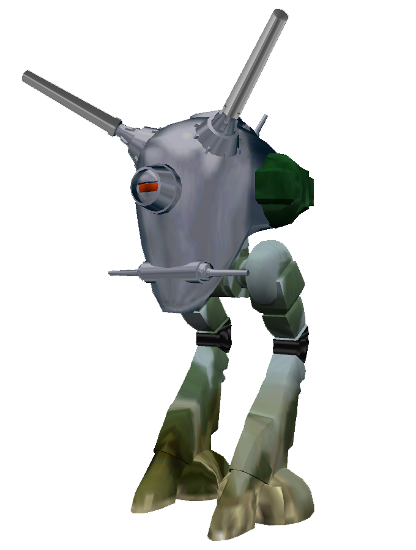
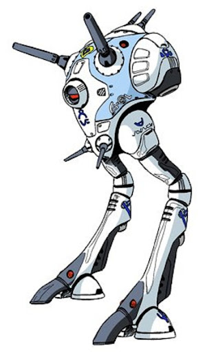

Genel Bakış
Half-Life Alpha 0.52/0.62 sürümleri, 8 Eylül 1997 tarihli Half-Life'ın sızdırılmış sürümlerdir. Diskin içeriği Ocak 2013'te Reddit'te paylaşılmış ve sonrasında Valvetime forumu aracılığıyla tüm kitleye sunulmuştur. Disk ise eBay'de satışa çıkarılmış ve daha sonra 709 ABD dolarına satın alınmıştır. Daha sonraki ön sürümlerden (Half-Life Uplink ve Half-Life Day One) farklı olarak, Half-Life Alpha Valve tarafından resmi olarak hiç yayınlanmamıştır.
Haritalar ve Silahlar
Alfa sürümünde üç silah bulunur ve hepsinin sınırsız cephanesi vardır (Glock, MP5 ve Levye). Bu sayede güncel sürümdeki çoğu silahın bu zamana kadar oyuna eklenmedikleri anlaşılmaktadır.
Henüz tam olarak bitmemişlerde dahil olmak üzere 21 Harita içerir:
- > The Portal Device -> (Unforeseen Consequences)
- > The Office Warrens -> (Office Complex)
- > The Security Complex -> ("We've Got Hostiles")
- > Alien Research Lab -> (Questionable Ethics)
- > Communications Center -> ("Forget About Freeman!")
- > Reactor Lab -> (Lambda Core)
Geliştirme Notları: Polyrobo
Bu sürüm aynı zamanda dönemine göre devrimsel sayılabilecek pek çok özellik içermekteydi...


Yukarıdaki model figürü 1997 NextGeneration sunumu için geliştirilmiş Polyrobo isimli robota aittir. Kendisine ateş edildiğinde "Ooga Chaka" dansı yapar. Polyrobo'nun modeli Super Dimension Fortress Macross animesindeki Zentraedi Tactical Battle Pod'dan ilham alınmıştır. Polyrobo 6000 poligona sahiptir... (Örnek Karşılaştırma: Gordon Freeman (639), G-Man (576), Nihilanth (1859)).
Ofis İncelemeleri
Valve çalışanlarının yıllardır geliştirdikleri oyunları bir süre sonra topluca inceleyip yorumlar yaptığı söylenmektedir. Bu resimlerden de anlaşıldığı üzere bu, şirket içinde gelenekselleşmiş bir harekettir.